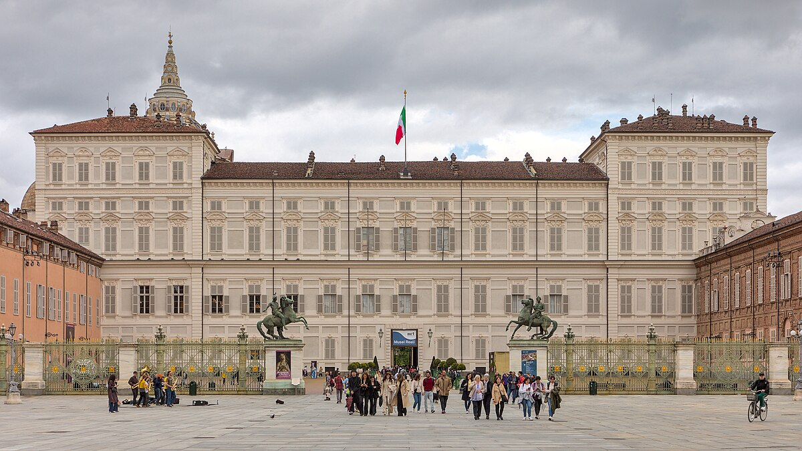

ISMERD MEG DON BOSCO
TÖRTÉNETÉT
MIÉRT FONTOS Chieri?
Chieri egy város Észak-Olaszországban, Piemont tartományban, Turin közelében (kb. 16 km-re). Van egy hosszú, több mint 2000 éves történelme: a bronz- és vaskori településektől kezdve, a római hódításig („Carrea potentia” néven), majd középkori városi commune státuszig. A város fontos kulturális-vallási központ, sok régi templommal, kolostorral, kiállítási múzeummal.
Chieri:
|
Don Bosco és Chieri: Giovanni Melchiorre Bosco – a későbbi Don Bosco – fiatal éveinek egy meghatározó szakaszát Chieriben töltötte. Néhány fontos pont: Életkora, érkezése: 1831-ben (amikor Don Bosco 16 éves volt) került Chieribe, hogy itt folytassa tanulmányait. |
|
Seminárium: Chieri egyik fontos intézménye volt az érseki szeminárium ("Archbishop"s Seminary / San Filippo") amelyhez tartozik a San Filippo templom is. Itt tanult és élt Bosco 1835-től 1841-ig. |
|
Barátja Luigi Comollo: Chieriben ismerkedett meg Comollóval, aki fiatalon meghalt. Egy számottevő élmény volt Bosco életében, mikor Comollo halála után Bosco állítása szerint hallotta Comollo hangját és megnyugtató üzenetét („…mi sono salvato” – „bizony, én üdvözölve vagyok”). Ez az élmény nagy hatással volt Don Bosconak. |
JEGYÁRAK:
A Torinói Királyi Palotába a jegyár (felnőtt): 15 eur. 18-25 között 2 eur.
